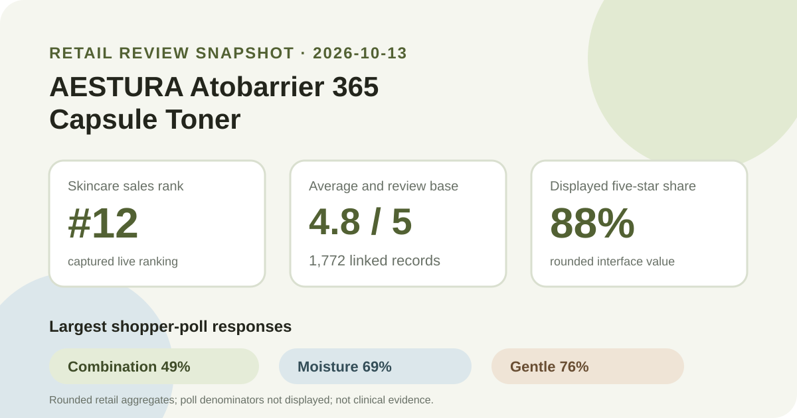
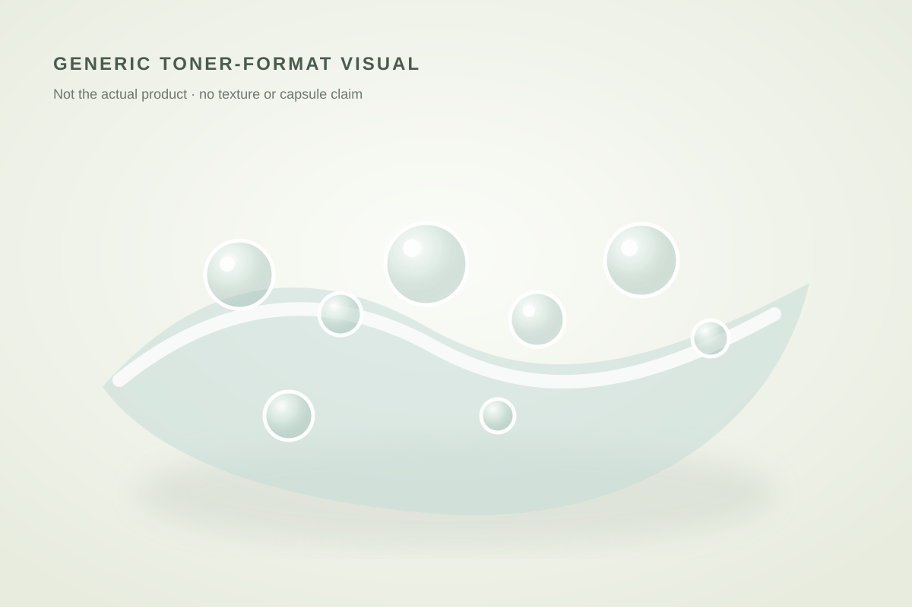

Aggregate data captured October 13, 2026. This article uses only a Korean K-beauty retail platform's displayed rating, review count, star distribution, shopper polls, and anonymous automated theme summary. No individual review, reviewer name, or user photo is reproduced or translated. I did not test the product.

The short version: AESTURA Atobarrier 365 Capsule Toner ranked 12th in the captured skincare sales list and displayed 4.8 out of 5 from 1,772 review records. The detailed panel showed 88% five-star, while the largest poll responses were combination skin 49%, moisture concern 69%, and gentle 76%. Those are useful retail signals, not proof of hydration, soothing, barrier repair, capsule delivery, or individual tolerance.
The retailer displayed an average of 4.8 across 1,772 linked review records. The detailed distribution placed 88% in the five-star band, 8% in four stars, 3% in three stars, none in two stars, and 1% in one star. Because those values are whole-number interface percentages, they describe rounded shares rather than an exact reconstruction of every rating.
The distribution is strongly positive, yet it does not establish that 88% of all purchasers would give the same score. People who submit retail reviews can differ from people who do not, promotional timing may affect participation, and the platform does not expose the sampling or moderation details needed for a population estimate. The one-star share is small but still visible; it should not be erased by the high average.
The skin-type panel showed combination 49%, dry 45%, and oily 6%. Combination is the largest group, but dry respondents appear at a similar scale. That makes the panel more useful as a description of who answered than as a recommendation engine. A person with combination skin is not guaranteed a better result, and an oily-skin respondent is not evidence of poor fit merely because that group was smaller.
The concern panel showed moisture 69%, soothing 30%, and wrinkle/brightening 1%. These are labels selected in the retailer's review interface. They are not corneometer measurements, redness scores, wrinkle readings, or verified outcomes. It is reasonable to say that moisture was the dominant displayed concern association; it is not reasonable to turn 69% into a hydration success rate.
The irritation panel showed gentle 76%, ordinary 23%, and felt irritation 1%. This is the closest available panel to a tolerance signal, but it still lacks a visible denominator and clinical definitions. “Gentle” is a shopper response, not a safety certification, and the 1% response cannot be interpreted as an adverse-event incidence rate.

The retailer's automated recent-review summary labeled 90% of its summarized subset as positive. Its anonymous grouped themes concerned moisture or dry-feeling relief, mild-feeling use, and barrier or soothing impressions. I use those only as broad topic labels because the summary is an automated layer over an unspecified recent subset. It is not the same dataset as all 1,772 linked ratings, and its percentage should not be combined with the star shares or shopper polls.
No individual comment is needed to understand those themes, and none is reproduced here. The summary can show what topics recurred in the retailer's own grouping, but it cannot validate a mechanism, confirm a diagnosis, establish a time course, or distinguish the effect of this toner from the rest of a shopper's routine.
This is a toner listing, separate from the previously covered AESTURA Atobarrier 365 Lotion, Atobarrier 365 Cream, and Hydro Soothing Cream. Shared line naming does not make their ratings interchangeable. Each listing has its own source identifier, format, review base, and capture date.
The captured Korean listing described a 300 ml toner set with a 30 ml soothing-cream gift and a 7 ml ampoule gift. It showed a reference price of ₩30,000 and a promotional price of ₩22,500 at capture. Those package and price details are volatile and may not match another region, seller, date, or formula. They provide shopping context only, not a value verdict.
The retailer categorized the item as a skin/toner product and used “capsule toner” in the title. That supports only a general description of a watery toner format that visually may contain suspended elements. I did not handle the bottle, inspect the liquid, shake it, apply it with hands or cotton, smell it, or measure viscosity. The local illustration intentionally avoids claiming the actual product's appearance or feel.
The title also does not disclose capsule composition or concentration. Without a verified current ingredient label and technical documentation, this analysis does not infer what the visible particles contain, how they dissolve, or whether the format changes delivery or results.
It is a Korean K-beauty retail platform's displayed one-decimal average across 1,772 linked records on the capture date. The detailed panel was 88% five-star, 8% four-star, 3% three-star, 0% two-star, and 1% one-star.
Combination was the largest displayed response at 49%, with dry close behind at 45%. Those values describe poll representation, not comparative efficacy or guaranteed fit.
The irritation poll showed 76% gentle, 23% ordinary, and 1% felt irritation. The denominator and definitions were not shown, so the panel cannot predict your experience.
No. Shopper concern labels and automated topics are sentiment metadata, not clinical measurements. The article does not convert those labels into treatment claims.
No. I did not use or photograph the product. The visual is a brand-neutral format illustration and does not claim the actual color, viscosity, capsule contents, or finish.
AESTURA Atobarrier 365 Capsule Toner was the highest-ranked valid unpublished product family in the captured skincare sales list. The page was readable, the Korean ranking and detail titles matched, and both review surfaces agreed on 4.8 stars from 1,772 records. Its 88% five-star share and 76% gentle response are favorable storefront signals, while the self-selected sample, rounded values, hidden poll denominators, and lack of product-use or clinical evidence keep the conclusion deliberately modest.
Source: Olive Young Korea product listing. Aggregate data captured 2026-10-13. No individual review text, reviewer identity, product photo, or user photo is reproduced or translated.
See all products ranked by captured review volume · Browse captured skin-type poll representation · Read the methodology